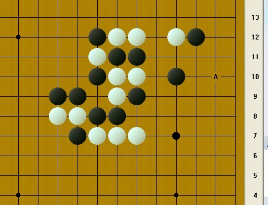
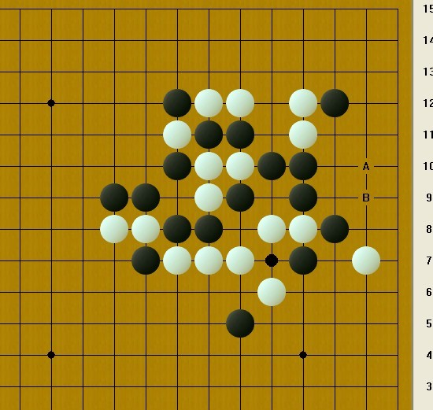

一盘我认为最精彩的棋来自中村茂
#1 一盘我认为最精彩的棋来自中村茂 作者：越狱行辕 发表时间：2012-2-2 14:35:27
这一盘棋是我看过所有棋谱当中，我认为最精彩的一盘，当然了，每个人心中都有不同的精彩，我把学习这盘棋的心得写下来，希望大家能从这盘棋学到一些东西。
这盘棋是中村茂对冈部宽的一盘斜月，中村执白，斜月三打
下这盘棋的时候中村茂快五十了吧，当好多人都认为中村已不在是神话，不在是神的时候，我想，他能继续在赛场上战斗，在我心里，神的位置依旧无法替代，无论他是胜是败。
进攻失败的话，会给白棋带来很多材料丢失先手，即使换一种进攻方式，但是黑棋依旧没有胜利，在白棋强大的防守下，特别是中村茂执白的情况下，黑棋的进攻只会带给白棋更多的材料，而最终取得失败
现在来观察一下局面

要注意这里白棋是有杀的
还记得A点吗？关键点，白棋和上方取得联系的关键位置，现在又多了B点

#2 Re:一盘我认为最精彩的棋来自中村茂 作者：茗弈宽容 发表时间：2012-2-2 14:55:57
 谢谢越狱哥们的分享和精彩解说，沙发抢了再慢慢欣赏。
谢谢越狱哥们的分享和精彩解说，沙发抢了再慢慢欣赏。
#3 Re:一盘我认为最精彩的棋来自中村茂 作者：茗弈宽容 发表时间：2012-2-2 15:14:44
如果没有特别大的优势，进攻方向尽量不要单一，开局重要的是争夺先手和保持先手积累材料的过程。单一的方向如果没有胜，进攻起来会比较麻烦，所以要在其他的方向继续积攒材料.......
学习了，分析得非常清楚细致！这是2012年看到的最好的一篇棋评！
#4 Re:一盘我认为最精彩的棋来自中村茂 作者：怪 发表时间：2012-2-2 15:24:58
精彩
28够阴险的
#5 Re:一盘我认为最精彩的棋来自中村茂 作者：逆刃 发表时间：2012-2-2 21:44:08
期待更多精彩的棋评，同时也欢迎大家多多分享自己的行棋或观棋感悟，鲜花威望伺候。#6 Re:一盘我认为最精彩的棋来自中村茂 作者：山东歪歪 发表时间：2012-2-2 21:48:22
呵呵，感谢分享这么精彩的对局，思路确实太强悍了
#7 Re:一盘我认为最精彩的棋来自中村茂 作者：第五象限 发表时间：2012-2-2 23:58:11
解说很精彩！#8 Re:一盘我认为最精彩的棋来自中村茂 作者：茗弈宽容 发表时间：2012-2-3 11:22:49
5楼的鲜花送少了~
#9 Re:一盘我认为最精彩的棋来自中村茂 作者：周光乐 发表时间：2012-2-3 12:09:32
bucuo~~~~~~~~~~#10 Re:一盘我认为最精彩的棋来自中村茂 作者：与郎共五 发表时间：2012-2-3 16:27:27
投子的原因是B5抓33#11 Re:一盘我认为最精彩的棋来自中村茂 作者：蹲街丶式寂寞 发表时间：2012-2-3 19:39:13
无限佩服这个24手，导致走火入魔，咳！学不来了。我的水平还不能达到支撑这个思路。希望再上这样的好文。
［ 茗弈宽容 于 2012-2-4 12:27:19 时花20金币送鲜花一朵］
#12 Re:一盘我认为最精彩的棋来自中村茂 作者：呦呦鹿鸣 发表时间：2012-2-4 19:03:21
貌似白20后，黑可以胜的#13 Re:一盘我认为最精彩的棋来自中村茂 作者：弱惜 发表时间：2012-2-5 12:54:36
12楼，发图学习下。
#14 Re:一盘我认为最精彩的棋来自中村茂 作者：nara 发表时间：2012-3-2 19:40:08
谢谢楼主分享这么精彩的文章！#15 Re:一盘我认为最精彩的棋来自中村茂 作者：没事摆石子玩 发表时间：2012-3-3 1:28:22
TO12楼 凡是觉得20之后可胜的 大概都是只看黑石没看终结者的。。。 当年这棋下得时候 在国际官网聊天里就有人说黑左边能胜 实际白有防得 可以摆摆看或者拿终结者扫 能目算更好。。。 这盘确实超经典#16 Re:一盘我认为最精彩的棋来自中村茂 作者：虎哥 发表时间：2012-12-6 14:29:22
这篇文章后面的部分没了，求越狱达人出来补全。花束伺候。#17 Re:一盘我认为最精彩的棋来自中村茂 作者：嵯峨 发表时间：2013-7-11 13:08:35
求补全~
#18 Re:一盘我认为最精彩的棋来自中村茂 作者：月亮代表我的心 发表时间：2014-2-1 9:01:09
比赛精彩，，学习